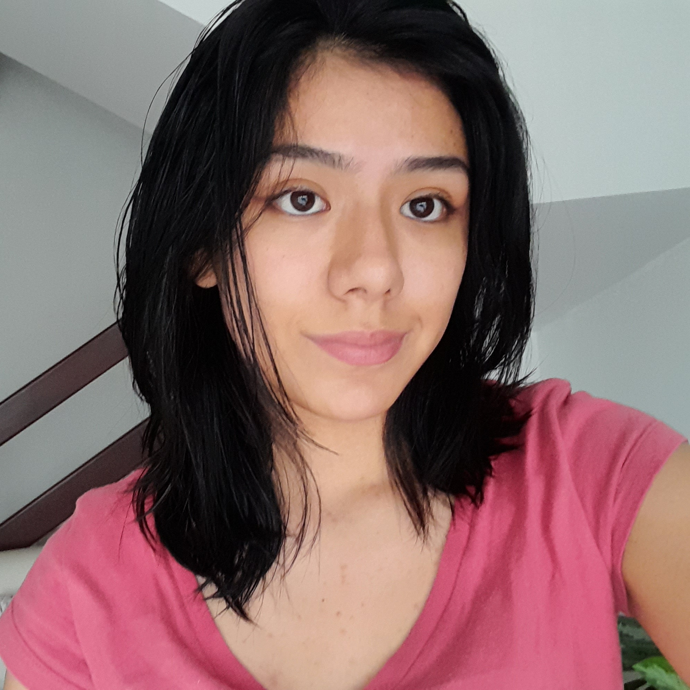

ESPECIFICACIONES TECNICAS HARDWARE Y SOFTWARE
Presentacion
Desarrollo de una aplicacion para el seguimiento del proceso de elaboracion de un cafe especial
Presentado por:
Paula Sofia Gomez Diaz
ADSO - 2669959
Edad: 17 años
Graduada de bachiller y actualmente cursado un
tecnologo de analisis y desarollo en el SENA
